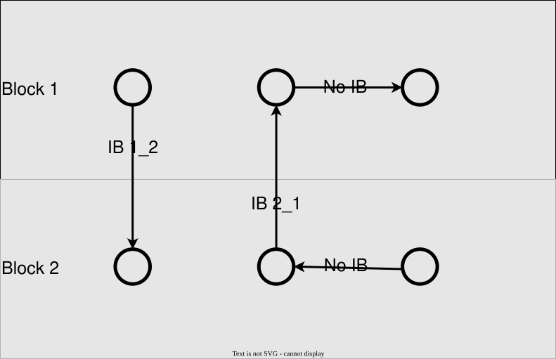

Damage Models
Every damage model entry accepts these shared keys:
| YAML key | Type | Required | Default | Range | Quantity | Description |
|---|---|---|---|---|---|---|
| Critical Value | number or data file | required | ≥ 0 | Failure limit of a bond: the critical stretch or the critical energy release rate, depending on the model; a number or a table over a node field | ||
| Interblock Damage | named entries of number | optional | — | Critical values of bonds between two blocks, as "Interblock Critical Value i_j" entries for bonds from block i to block j | ||
| Anisotropic Damage | section | optional | — | Direction-dependent critical values for Critical Energy Anisotropic, along the material axes | ||
| Local Damping | section | optional | — | Damps the waves released when bonds break (local damping after Silling) |
Damage index
The damage index $\phi$ of a material point is computed as [1] $\phi = \frac{\int_{\mathcal{H}}(1-\chi\langle\boldsymbol{\xi}\rangle)dV_{\xi}}{\int_{\mathcal{H}}dV_{\xi}}=\frac{\sum^n_{i=1}(1-\chi_i) dV_i}{\sum^n_{i=1} dV_i}$ with $\chi$ is the bond damage between 0 (broken) and 1 (unbroken), $V$ is the volume and $n$ is the number of neighbors.
Critical Stretch
The critical value corresponds to the critical stretch for this model, defined in the theory manual.
| YAML key | Type | Required | Default | Range | Quantity | Description |
|---|---|---|---|---|---|---|
| Only Tension | true/false | optional | true | Breaks bonds only under tension, not under compression |
Critical Energy
The critical value is the critical energy release rate; a bond breaks once its energy exceeds the critical bond energy derived from it, see the theory manual.
| YAML key | Type | Required | Default | Range | Quantity | Description |
|---|---|---|---|---|---|---|
| Only Tension | true/false | optional | true | Breaks bonds only under tension, not under compression | ||
| Thickness | number | optional | 1 | ≥ 0 | length | Out-of-plane thickness of a 2D model, used to convert the energy release rate to a bond energy |
Critical Energy Anisotropic
Like Critical Energy, but with different critical values along the material axes, given in the Anisotropic Damage section. The material axes follow the node orientations (Angles in the mesh file).
| YAML key | Type | Required | Default | Range | Quantity | Description |
|---|---|---|---|---|---|---|
| Only Tension | true/false | optional | false | Breaks bonds only under tension, not under compression | ||
| Thickness | number | optional | 1 | ≥ 0 | length | Out-of-plane thickness of a 2D model, used to convert the energy release rate to a bond energy |
Anisotropic Damage:
| YAML key | Type | Required | Default | Range | Quantity | Description |
|---|---|---|---|---|---|---|
| Critical Value X | number | required | Critical bond energy for the bond share along the material x axis | |||
| Critical Value Y | number | required | Critical bond energy for the bond share along the material y axis | |||
| Critical Value Z | number | optional | — | Critical bond energy for the bond share along the material z axis (3D); the y value if not given |
Interblock Damage
Interlaminar behaviour between different material blocks can be defined using the Interblock Critical Value parameter. If a Bond is crossing a block interface, a user defined critical damage value is applied to the bonds.
As bonds are bidirectional, the critical damage value can be defined for both orientations, for example:
- Interblock Damage:
- Interblock Critical Value 1_2: 0.1
- Interblock Critical Value 2_1: 0.1
Bonds that aren't crossing a block interface are not affected by the interblock damage model.

Local Damping
Silling proposed a local damping to reduce waves induced by cracked bonds in [1] in (EQ 2.34). This proposed algorithm is introduced in Material_Basis.jl.
The bond force due to damping is computed as
\[\mathbf{t}_{damp}\langle\boldsymbol{\xi}\rangle = \overline{\phi}d c\frac{|\eta_{i}|-|\eta_{i-1}|}{dt v_0}\frac{\eta_i}{|\eta_i|}\]
with the numerical local damping coefficient $d$, the bond stiffness $c$, the rate of bond extension $\dot{e}=\frac{|\eta_{i}|-|\eta_{i-1}|}{dt},$ where $|\eta_{i}|$ and $|\eta_{i-1}|$ the length of the deformed bond vector at iteration step $i$ and $i-1$ and $dt$ is the time increment.
The average damage index between point $i$ and it's neighbor $j$ can be computed as $\overline{\phi}=\frac{\phi_i+\phi_j}{2}$ and using the Young's modulus $E$ and the mass density $\rho$ the dilatation wave speed [9] as
\[v_0=\sqrt{\frac{E}{\rho}}\]
It is switched on with a Local Damping section in the damage model entry:
| YAML key | Type | Required | Default | Range | Quantity | Description |
|---|---|---|---|---|---|---|
| Representative Young's modulus | number | required | ≥ 0 | stress | Young's modulus that sets the wave speed of the damping | |
| Damping coefficient | number | required | ≥ 0 | Strength of the damping; 0 switches it off |